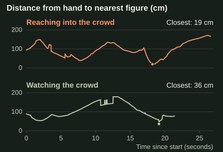

Explore worlds
that respond
to you.
SpatialMAS is a research platform for exploring how people interact with groups of virtual objects. On a headset or desktop, you can shape a swarm, play notes through movement, or study how a crowd makes room. Record a session to see how the interaction unfolded.
Interactive examples
Explore a simplified version of each headset scene in your browser.
Reach towards the moving pyramids.
Keyboard controls
Tab to the scene. Use the arrow keys to move the hand. In scenes with cubes, press Space to pick up the nearest cube and Space again to release it.
Three scenes you can explore.
Start with a ready-made scene. You can change its settings without writing code.
How close did the hand get?
SpatialMAS can record where your hands and the virtual objects were at the same moment. These two Crowd Avoidance recordings show the distance between the right hand and the nearest object as someone reached towards the group or stood back to observe.

Help with setup and recordings support@spatialmas.com (planned mailbox)
Who could use it?
Research labs
Change how a crowd responds to a person. Compare movement across sessions and ask participants how much control they felt.
Artists and sound designers
Explore how a gesture can shape a piece of music. In Musical Encounters, the position of a cube helps determine which note plays.
Pilot and funding partners
SpatialMAS grew out of doctoral research at the University of Oslo. The project is developing a standalone headset prototype and exploring how labs could use and license it.
Project and funding
The University of Oslo is developing SpatialMAS with support from the Research Council of Norway’s Qualification programme for the commercialisation of research. View award 365744
- Qualification funding

See SpatialMAS
in a guided demo.
Bring an experiment, a creative idea or a question about a pilot. We’ll show you the headset experience and what you can learn from a session recording.